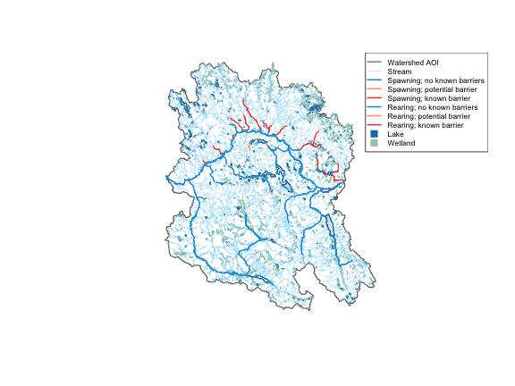

Coho rearing/spawning network upstream of the Neexdzii Kwa / Wedzin Kwa confluence with watershed AOI, all FWA streams, lakes, and wetlands. Colours from the gq style registry.
library(fresh)
library(sf)
#> Linking to GEOS 3.13.0, GDAL 3.8.5, PROJ 9.5.1; sf_use_s2() is TRUE
blk <- 360873822
drm <- 166030.4
# Watershed AOI
aoi <- frs_db_query(sprintf(
"SELECT ST_Union(geom) as geom FROM whse_basemapping.fwa_watershedatmeasure(%s, %s)",
blk, drm
))
# All upstream streams (background)
streams_all <- frs_network_upstream(
blue_line_key = blk,
downstream_route_measure = drm
)
# Coho rearing/spawning network (order 4+)
co_habitat <- frs_network_prune(
blue_line_key = blk,
downstream_route_measure = drm,
stream_order_min = 4,
watershed_group_code = "BULK",
extra_where = "(s.rearing > 0 OR s.spawning > 0)",
table = "bcfishpass.streams_co_vw",
cols = c("segmented_stream_id", "blue_line_key", "waterbody_key",
"gnis_name", "stream_order", "channel_width", "mapping_code",
"rearing", "spawning", "access", "geom"),
wscode_col = "wscode",
localcode_col = "localcode"
)
# Lakes and wetlands (waterbody_key bridge — see fresh#8)
lakes <- frs_waterbody_network(
blue_line_key = blk,
downstream_route_measure = drm
)
wetlands <- frs_waterbody_network(
blue_line_key = blk,
downstream_route_measure = drm,
table = "whse_basemapping.fwa_wetlands_poly"
)
reg <- gq::gq_reg_main()
cls <- gq::gq_tmap_classes(reg$layers$streams_salmon)
streams_all_style <- gq::gq_tmap_classes(reg$layers$streams_all)
lake_style <- gq::gq_tmap_style(reg$layers$lake)
wetland_style <- gq::gq_tmap_style(reg$layers$wetland)
# Coho colours from registry
co_habitat$col <- cls$values[co_habitat$mapping_code]
co_habitat$col[is.na(co_habitat$col)] <- "#999999"
co_habitat$lwd <- ifelse(co_habitat$spawning > 0, 1.7, 1.0)
# AOI boundary (sets extent)
plot(st_geometry(aoi), col = NA, border = "grey40", lwd = 1.5, main = "")
# Layer order: wetlands → lakes → all streams → coho habitat
if (nrow(wetlands) > 0) {
plot(st_geometry(wetlands), col = wetland_style$fill,
border = wetland_style$fill, add = TRUE)
}
if (nrow(lakes) > 0) {
plot(st_geometry(lakes), col = lake_style$fill,
border = lake_style$col, add = TRUE)
}
plot(st_geometry(streams_all), col = "#a9e0ff", lwd = 0.3, add = TRUE)
plot(st_geometry(co_habitat), col = co_habitat$col,
lwd = co_habitat$lwd, add = TRUE)
# Legend
present <- names(cls$values) %in% unique(co_habitat$mapping_code)
legend(
"topright",
legend = c("Watershed AOI", "Stream", cls$labels[present], "Lake", "Wetland"),
col = c("grey40", "#a9e0ff", cls$values[present], lake_style$col, wetland_style$fill),
pch = c(NA, NA, rep(NA, sum(present)), 15, 15),
lwd = c(1.5, 0.8, rep(2, sum(present)), NA, NA),
pt.cex = c(NA, NA, rep(NA, sum(present)), 1.5, 1.5),
cex = 0.7, bg = "white"
)
Coho rearing and spawning habitat upstream of
the Neexdzii Kwa confluence (order 4+), with all FWA streams, lakes, and
wetlands.
1027 coho habitat segments (orders 4, 5, 6), 8876 total stream segments, 363 lakes, 1293 wetlands.
Summary
| Function | What it does |
|---|---|
frs_point_snap() |
Snap a point to the nearest stream |
frs_stream_fetch() |
Fetch FWA streams by watershed group, bbox, or blue line key |
frs_network_upstream() /
_downstream()
|
Walk the stream network |
frs_network_prune() |
Filter by order, gradient, or custom SQL predicates |
frs_waterbody_network() |
Lakes/wetlands upstream or downstream via waterbody_key bridge |
frs_fish_obs() / frs_fish_habitat()
|
Fish observations and habitat model |
All functions accept table and cols
parameters for flexibility across FWA and bcfishpass views.